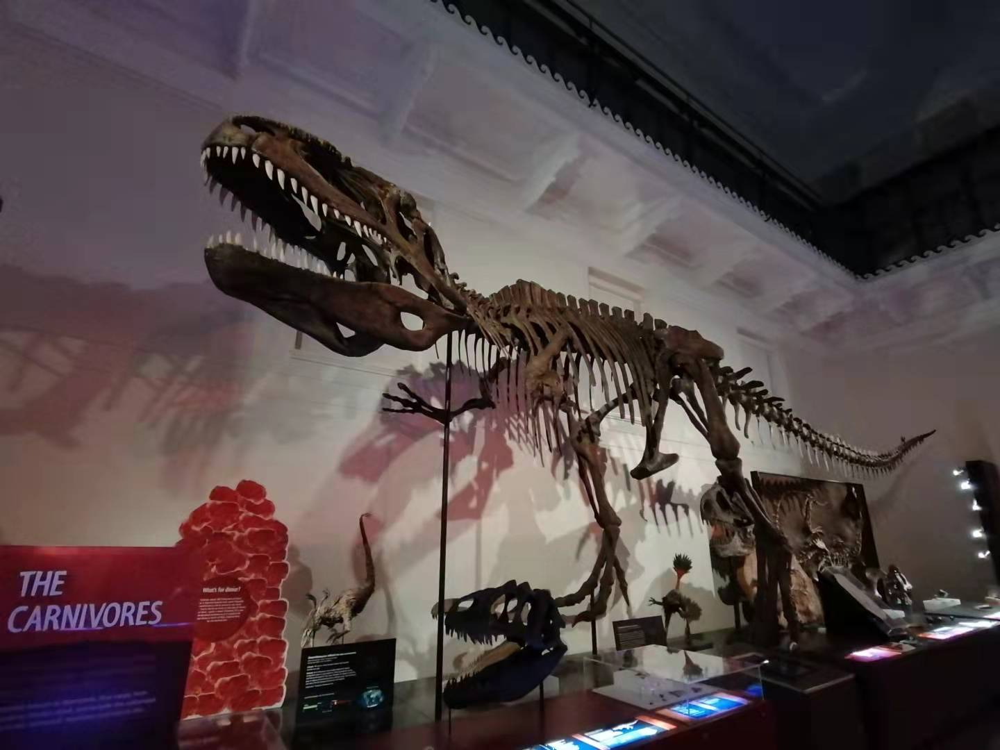
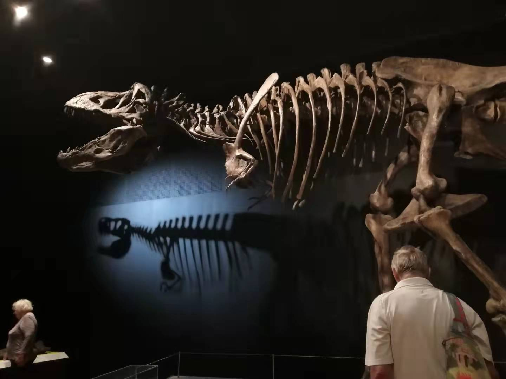

An old photograph of mine
I was born in Shanghai on 11th of April, 2002. I'm currently study in UTS college. My Student number is 3460475.I first came to Australia in 2017. These years, I've been through Language intensive school and high school.
 My favourite animals are dinosaurs, sometimes it is hard to belive that there were giants like them once shared the same planet with us, it is a lot of fun watching relative videos about them, knowing their possible life and how they dominated the Earth. Also, it's always a great pleasure to go to musuem to see those massive creatures by yourself. To witness the nature's uncanny workmanship, and the beauty of how they were constructed.
 I'm a university student nowdays, and it is important for people like student to improve themselves. I belive we are now standing at the crossroad at life,therefore, this chance to create an website by our own hands is an valuable experience, especially during this time. Expand new things is never getting old.
I'm a university student nowdays, and it is important for people like student to improve themselves. I belive we are now standing at the crossroad at life,therefore, this chance to create an website by our own hands is an valuable experience, especially during this time. Expand new things is never getting old.
There are a lot of things I need to improve of this website, but I still hope it can be joyful to read.
Thanks for reading, and if you don't mind, I wish you have a good experience through the following websites.
Feel free to click into those links to check my favourite toy/place!